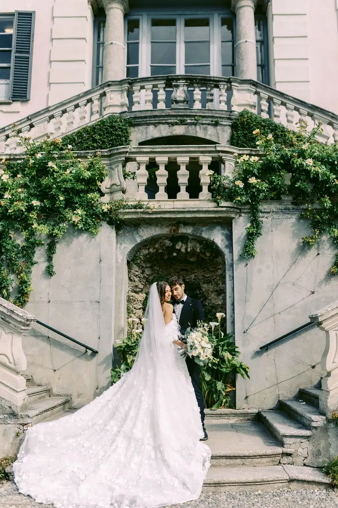
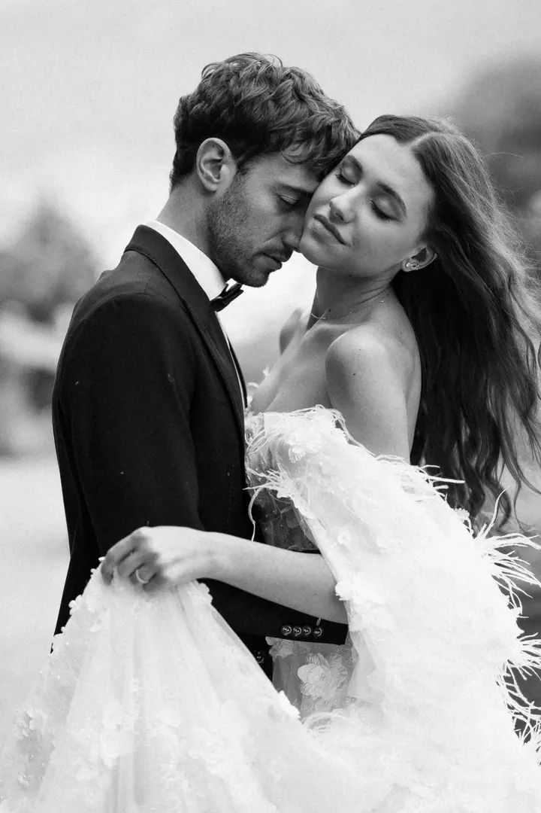

jedna
Svatby
Fotím celý svatební den od detailů po večerní oslavu, v Plzeňském kraji, po celé ČR i v zahraničí. Balíček na půl dne zahrnuje osobní schůzku, až 8 hodin focení a od 400 upravených fotografií.

Svatební, párový a rodinný fotograf · Stříbro, Plzeňský kraj, celá ČR i Evropa

Jmenuji se David George a od roku 2014 fotím to nejdůležitější, lidi a jejich příběhy. Nejčastěji svatby, páry a rodiny. Jsem doma ve Stříbře a za focením rád vyrazím po celé ČR i Evropě.
Více o mně
Co fotím
jedna
Fotím celý svatební den od detailů po večerní oslavu, v Plzeňském kraji, po celé ČR i v zahraničí. Balíček na půl dne zahrnuje osobní schůzku, až 8 hodin focení a od 400 upravených fotografií.
dvě
Fotky, které vám emoce připomenou i po letech. Místo strnulých póz vytvářím situace a pohyb, ve kterých se budete cítit přirozeně.
tři
Společné chvíle plné radosti a blízkosti. Fotíme venku, v pohybu a v klidu, aby se i děti bavily.
Nové portréty pro vás osobně i pro práci. Rád vás nasměruji, ale tak, aby výsledek působil autenticky a živě.

Fotky, které vám emoce připomenou i po letech

Za objektivem
Jsem doma ve Stříbře a nejčastěji mě potkáte s foťákem v ruce v Plzeňském kraji. Za svatbou nebo focením páru ale klidně vyrazím po celé republice i dál, fotil jsem v Itálii, Maďarsku, Rakousku i Německu.
Specializuji se hlavně na svatby, rodinné focení a páry. Miluju přirozené světlo, barvy, pohyb a opravdové emoce. Nejde mi jen o pózy. Spíš vytvářím situace, které emoce přirozeně vyvolají, a když je potřeba, nasměruji vás tak, aby výsledek působil živě.
Ke každému focení přistupuji individuálně. Rád se s vámi předem setkám osobně, abychom si sedli a focení nebylo jen služba, ale příběh, který prožijeme spolu. Focení mě pořád baví jako první den.
David
Zavolejte nebo napište, nezávazně a v klidu. Když nezvedám, právě fotím a ozvu se zpět.
Sejdeme se předem, probereme, co chcete zachytit, a poznáme se. U svatebního balíčku je konzultace samozřejmostí.
Pracuji v uvolněné atmosféře. Místo strnulých póz vytvářím situace a pohyb, ve kterých budete sami sebou.
Upravím všechny fotky, které se povedly. U svatby je dostanete na flash disku i v cloudu a 50 z nich v tisku.
Portfolio
Otázky
Jsem doma ve Stříbře a nejčastěji fotím v Plzeňském kraji. Za svatbou nebo párovým focením rád vyrazím po celé ČR i do zahraničí.
Svatební focení začíná od 8 000 Kč. Půldenní balíček za 12 000 Kč zahrnuje schůzku, až 8 hodin focení, od 400 upravených fotek, flash disk, cloud na měsíc a 50 fotek v tisku.
Párové i rodinné focení začíná od 3 000 Kč. Přesnou cenu domluvíme podle toho, co si představujete.
Vůbec ne. Nasměruji vás, když je potřeba, ale hlavně vytvářím situace, ve kterých se uvolníte a budete se cítit přirozeně.